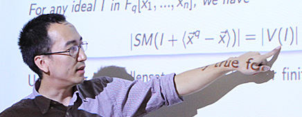

Sean/Sicun Gao
Postdoctoral Researcher, MIT CSAIL/EECS
Email: sicung at csail dot mit dot edu
Office: 32-G770 (32 Vassar Street, Cambridge, MA 02139 USA)
Research
I work on automated reasoning, and its applications in programmable systems that are not necessarily digital.
Software
Papers
[Recent]
- Interpolants in Nonlinear Theories over the Reals [pdf]
Sicun Gao and Damien Zufferey (Alphabetical Order)
In TACAS (International Conference on Tools and Algorithms for the Construction and Analysis of Systems) 2016
- SMT-Based Analysis of Virtually Synchronous Distributed Hybrid Systems [pdf]
Kyungmin Bae, Peter Olveczky, Soonho Kong, and Sicun Gao
In HSCC (ACM International Conference on Hybrid Systems: Computation and Control) 2016
- APEX: A Tool for Autonomous Vehicle Plan Verification and Execution [pdf]
Matthew O'Kelly, Houssam Abbas, Sicun Gao, Shin'ichi Shiraishi, Shinpei Kato, and Rahul Mangharam
In Society of Automotive Engineers (SAE) World Congress and Exhibition 2016
- Automated Vulnerability Analysis of AC State Estimation under Constrained False Data Injection in Electric Power Systems [pdf]
Sicun Gao, Le Xie, Armando Solar-Lezama, Dimitrios Serpanos, and Howard Shrobe
In CDC (IEEE Conference on Decision and Control) 2015
- SMT-Based Nonlinear PDDL+ Planning [pdf]
Daniel Bryce, Sicun Gao, David Musliner, and Robert P. Goldman
In AAAI (AAAI Conference on Artificial Intelligence) 2015
[Delta-Decisions: Framework Issues]
- Delta-Decidability over the Reals [arXiv]
Sicun Gao, Jeremy
Avigad, and Edmund Clarke
In LICS (Logic in Computer Science) 2012
- Delta-Complete Decision Procedures for Satisfiability over the
Reals [arXiv]
Sicun Gao, Jeremy Avigad, and Edmund Clarke
In IJCAR
(International Joint Conference on Automated Reasoning) 2012
- Descriptive Control Theory: A Proposal [arXiv]
Sicun Gao
Kurt Gödel Research Prize Fellowship Silver Medalist, 2014
- Computable Analysis, Hybrid Automata, and Decision Procedures [extended abstract]
PhD Thesis in Logic, Carnegie Mellon University 2012
Committee: Edmund Clarke (co-chair), Jeremy Avigad
(co-chair), Lenore Blum, Randy Bryant, and Jeannette Wing
CMU School of Computer Science Distinguished Dissertation Award Honorable Mention 2012
[Delta-Decisions: Algorithms and Tools]
- Satisfiability Modulo ODEs [arXiv]
Sicun Gao, Soonho Kong, and Edmund Clarke
In FMCAD (Formal Methods in Computer-Aided Design)
2013
- dReal: An SMT Solver for Nonlinear Theories of Reals [pdf] [tool]
Sicun Gao, Soonho Kong, and Edmund Clarke
In CADE (International
Conference on Automated Deduction) 2013
- dReach: Delta-Reachability Analysis for Hybrid Systems [pdf]
Soonho Kong, Sicun Gao, Wei Chen, and Edmund Clarke
In TACAS (International Conference on Tools and Algorithms for the Construction and Analysis of Systems) 2015
- Proof Generation from Delta-Decisions [arXiv]
Sicun Gao, Soonho Kong, and Edmund Clarke
In SYNASC (International Conference on Symbolic and Numerical Algorithms for Scientific Computing) 2014
- Integrating ICP and LRA Solvers for Deciding Nonlinear Real
Arithmetic [pdf]
Sicun Gao, Malay Ganai, Franjo Ivancic, Aarti Gupta,
Sriram Sankaranarayanan, and Edmund Clarke
In FMCAD (Formal
Methods in Computer Aided Design) 2010
[Applications and Case Studies]
- Towards Personalized Prostate Cancer Therapy Using Delta-Reachability Analysis [pdf]
Bing Liu, Soonho Kong, Sicun Gao, Paolo Zuliani, and Edmund Clarke
In HSCC (ACM International Conference on Hybrid Systems: Computation and Control) 2015
-
Parameter Synthesis for Cardiac Cell Hybrid Models Using Delta-Decisions [arXiv]
Bing Liu, Soonho Kong, Sicun Gao, Paolo Zuliani, and Edmund Clarke
In CMSB (Computational Methods in Systems Biology) 2014
- Floating-Point Bugs in the Embedded GNU C Library [pdf]
Soonho Kong, Sicun Gao, and Edmund Clarke
CMU SCS Technical Report CMU-CS-13-130
[Miscellaneous]
- Quantifier Elimination over Finite Fields with Groebner Bases [arXiv]
Sicun Gao, Andre Platzer, and Edmund Clarke
In CAI (International
Conference on Algebraic Informatics) 2011
- A Non-Prenex DPLL-Based QBF Solver with Game-State Learning [pdf]
William Klieber, Samir Sapra, Sicun Gao, and Edmund Clarke
In SAT
(Theory and Applications of Satisfiability Testing) 2010
- Counting Zeros over Finite Fields with Groebner Bases [pdf]
MS
Thesis in Logic, Carnegie Mellon University 2009
Background
- Postdoctoral Researcher, Computer Science Department, Carnegie Mellon University (2012-2014)
- PhD in Logic, Carnegie Mellon University (2012)
- BS in Logic and BS in Mathematics, Peking University (2006)
The infinite we shall do right away. The finite may take a little longer. -- Stanislaw Ulam